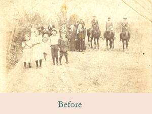
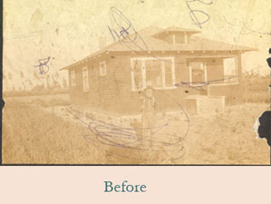
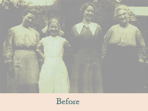

Our Work
Here are some examples of the fine work that we do. Point to each image to see the final result.
Example One

Example Two

Example Three

| Service: | Turn-Around Time |
|---|---|
| Photo restoration | Depends on extent of damage |
| Photo portrait touch-up | 7 business days |
| Photo DVD | 14 business days |
| Please contact us if you have questions. | |